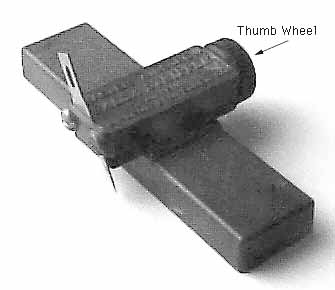

 This is the Master Airscrew Balsa Stripper. It is often available at local hobby shops, and worth seeking out. A pretty simple device, it is well made and works very well. By turning the thumb wheel on the right side of the crossbar, different widths can be easily set. The feed screw is a 10-32 so that each revolution of the wheel changes width by 1/32 of an inch. As you can see, it takes a standard #11 X-Acto blade. I have my blade in backwards as I am left-handed. Held against a sheet of balsa, it is drawn along the length, slicing as you go. Thicknesses of up to 3/8" can be cut, though for larger thicknesses I would recommend cutting half way from each side. The blade can wander slightly on harder wood. To reduce this wandering on thinner stock, I mount my blade so that only enough of the tip to make the cut extends from the holder. I then place the piece to be cut on a thicker spacer sheet, or the edge of my bench before cutting.
Copyright 1998, Thayer Syme. All rights reserved